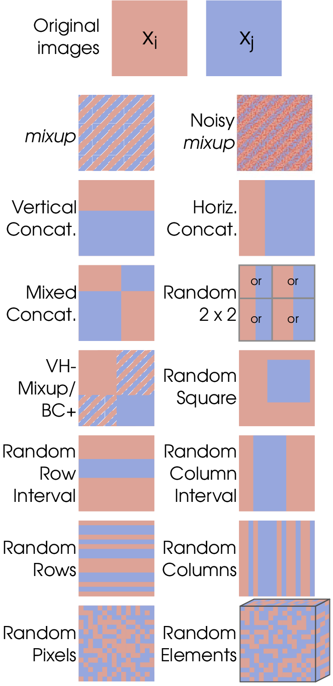

Data augmentation is a critical technique in the field of machine learning, particularly in tasks like image recognition, natural language processing, and time series prediction.
Its primary purpose is to artificially increase the size and diversity of training datasets, which in turn improves model performance and generalization. This is achieved by applying various transformations, such as rotations, flips, color adjustments, noise injection, or geometric transformations, to existing data. By introducing new, yet relevant, variations, data augmentation helps combat overfitting, especially when working with limited datasets.
In image processing, common augmentation methods include rotation, flipping, cropping, and adjusting brightness or contrast. For text data, augmentation techniques may involve synonym replacement, random insertion, or back-translation. Time-series data can benefit from augmentations like jittering, scaling, or time warping.
Recent research has also explored the use of generative models, such as Generative Adversarial Networks (GANs) and Variational Autoencoders (VAEs), for more sophisticated data augmentation. These models generate entirely new synthetic samples, expanding the diversity of data beyond traditional transformations.
The benefits of data augmentation are multifaceted: it improves model robustness, reduces the risk of overfitting, and enables the development of more accurate and reliable machine learning models, even with smaller datasets. The technique is widely used in domains such as computer vision, healthcare, finance, and autonomous systems.
Its primary purpose is to artificially increase the size and diversity of training datasets, which in turn improves model performance and generalization. This is achieved by applying various transformations, such as rotations, flips, color adjustments, noise injection, or geometric transformations, to existing data. By introducing new, yet relevant, variations, data augmentation helps combat overfitting, especially when working with limited datasets.
In image processing, common augmentation methods include rotation, flipping, cropping, and adjusting brightness or contrast. For text data, augmentation techniques may involve synonym replacement, random insertion, or back-translation. Time-series data can benefit from augmentations like jittering, scaling, or time warping.
Recent research has also explored the use of generative models, such as Generative Adversarial Networks (GANs) and Variational Autoencoders (VAEs), for more sophisticated data augmentation. These models generate entirely new synthetic samples, expanding the diversity of data beyond traditional transformations.
The benefits of data augmentation are multifaceted: it improves model robustness, reduces the risk of overfitting, and enables the development of more accurate and reliable machine learning models, even with smaller datasets. The technique is widely used in domains such as computer vision, healthcare, finance, and autonomous systems.
